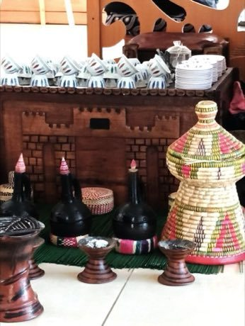

Home / Living Traditions / Africa: Nile and the Horn
Encyclopedia ID 189
Jebena coffee brewing
Also known as Buna · jebena


Roast, grind, boil in the clay jebena and pour in one continuous stream into small cups, timing each step by sight, sound and smell cues.
Heritage note
Part of the living heritage of Ethiopia, Eritrea. Some forms of this practice carry deep meaning for the communities who keep it; here we describe the play and the craft only, with respect for its roots.
Origins
A living tradition passed from person to person; it is not tied to a single dated origin. It belongs to the cultural world of Africa: Nile and the Horn.
Sources
Related entries

Eskista
Ethiopia · Dances
Tahtib
Egypt · Dances

Gumboot dance rhythm
South Africa · Dances

More from Ethiopia

Dorze cotton weaving
Ethiopia · Crafts and making

Masenqo and the azmari
Ethiopia · Musical instruments
Mesob basket weaving
Ethiopia · Crafts and making
Senterej
Ethiopia +1 · Board and table games